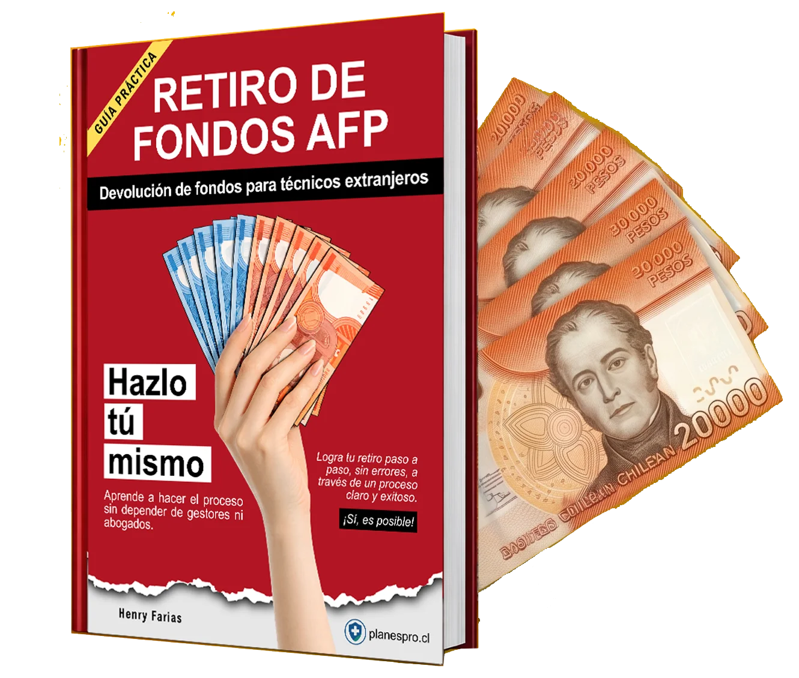
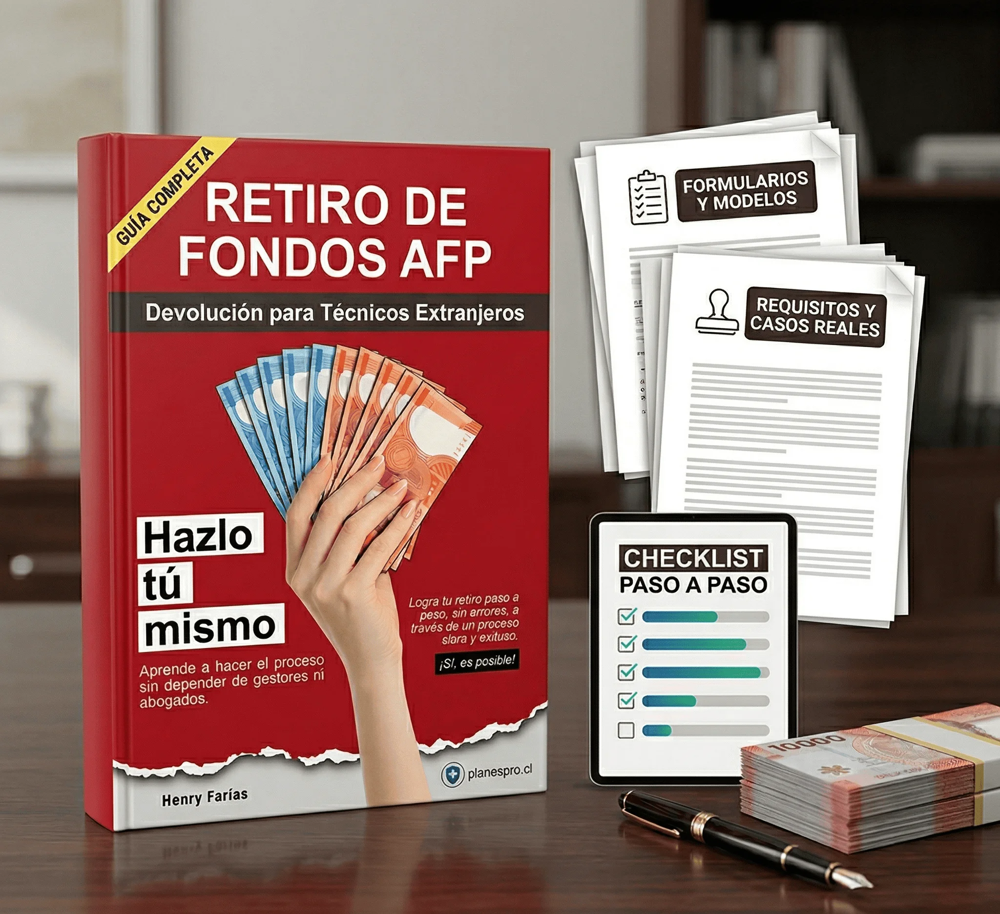

Evita pagar comisiones altas por una gestión que puedes comprender mejor y conducir con más criterio.
Para técnicos extranjeros que cotizaron en Chile
Retiro deFondos AFP
Haz el proceso tú mismo, evita pagar de más y avanza con una ruta clara.
Una guía práctica para entender si tu caso tiene base, ordenar tu expediente y reducir errores antes de pagar comisiones innecesarias.
Entiende requisitos y documentos clave
Ordena el trámite paso a paso
Reduce dependencia de terceros
Sin promesas mágicas. Sin humo. Con una ruta concreta para entender mejor tu caso y actuar con más fundamento.

Ordena el proceso con una secuencia lógica para reducir dudas, errores evitables y pasos en falso.
Entiende tu trámite con más confianza antes de delegar, pagar de más o avanzar a ciegas.
Qué cambia con esta guía
No se trata solo de leer. Se trata de entrar al trámite mejor preparado.
Dudas dispersas, requisitos poco claros y riesgo de pagar por orientación básica.
Un mapa para revisar documentos, validar si tu caso califica y detectar errores a tiempo.
Más control para decidir si avanzar por tu cuenta, corregir tu expediente o recién ahí pedir apoyo puntual.
Para quién es
Esta guía es para ti si quieres entender el trámite antes de pagar de más.
- Cotizaste en Chile como técnico extranjero y quieres entender si tu caso tiene base real.
- No quieres seguir pagando por explicaciones básicas, comisiones altas o pasos mal orientados.
- Necesitas una ruta práctica para ordenar documentos y moverte con más seguridad.
Para quién no es
Esta guía no es para ti si buscas atajos o promesas irreales.
- Si esperas una garantía automática de aprobación, este no es el producto correcto.
- Si no quieres revisar requisitos ni entender tu caso, la guía te va a sobrar.
- Si prefieres delegar todo sin criterio ni contexto, probablemente seguirás dependiendo de terceros.

Lo que te cuesta seguir improvisando
El problema no suele ser el trámite. Suele ser empezar mal.
- Pagas comisiones por información básica que podrías entender mejor.
- Avanzas con documentos incompletos o criterios poco claros.
- Pierdes tiempo corrigiendo errores que se pudieron evitar al inicio.
No pagues de más
No deberías pagar porcentajes, adelantos ni intermediarios dudosos por este trámite.
Hay personas que cobran por hacer lo que ya deberían explicarte como parte de su trabajo. Otros escalan casos sin viabilidad solo para facturar. Y también existen gestores que ni siquiera trabajan para una AFP y se mueven comprando o revendiendo "datos".
El problema no es solo perder dinero. También es exponerte a desinformación, falsas expectativas y decisiones mal tomadas desde el inicio.
- Evita tarifas altas, adelantos o porcentajes sobre tu retiro.
- Evita caer en gestores que no representan formalmente a ninguna AFP.
- Evita pagar por escalar casos que ni siquiera califican.
Qué incluye
Una guía creada para moverte del "no sé si califico" al "sé cómo avanzar mejor".
- Explicación clara del proceso de retiro de fondos AFP para técnicos extranjeros.
- Checklist paso a paso para ordenar documentos y evitar omisiones costosas.
- Modelos y apoyos prácticos para ejecutar con más seguridad y menos fricción.
- Casos y criterios reales para evaluar mejor tu situación antes de seguir gastando tiempo o dinero.

Tabla de contenido
Explora la estructura completa del e-book.
Abre cada sección para revisar los capítulos incluidos. El formato está organizado para que puedas entender rápidamente qué cubre la guía y cómo avanza el proceso.
- Prefacio
- Introducción
- Cómo usar esta guía
- Tabla de contenido
- Capítulo 1. En qué consiste este trámite
- Capítulo 2. Qué puedes lograr con este trámite
- Capítulo 3. Cuándo vale la pena hacerlo
- Capítulo 4. Mapa completo del proceso
- Capítulo 5. Mitos frecuentes antes de comenzar
- Capítulo 6. Diagnóstico inicial: si tu caso realmente califica
- Capítulo 7. Los requisitos estructurales del beneficio
- Capítulo 8. Errores que invalidan el caso desde el inicio
- Capítulo 9. Qué significa ser técnico o profesional extranjero para este trámite
- Capítulo 10. Cómo opera la Ley 18.156 en la práctica
- Capítulo 11. Cómo se construye un expediente sólido
- Capítulo 12. El título profesional o técnico
- Capítulo 13. El certificado previsional extranjero
- Capítulo 14. Identidad y acreditación personal
- Capítulo 15. Apostilla, legalización, traducción y trazabilidad documental
- Capítulo 16. Fechas, vigencia y coherencia cronológica
- Capítulo 17. El contrato de trabajo dentro del beneficio
- Capítulo 18. Casuística operativa del Contrato
- Capítulo 19. El anexo Ley 18.156: función, contenido y errores frecuentes
- Capítulo 20. Casos contractuales complejos y regularizaciones tardías
- Capítulo 21. Colombia
- Capítulo 22. Perú
- Capítulo 23. Venezuela
- Capítulo 24. ¿Estás en la AFP correcta para iniciar el trámite?
- Capítulo 25. Preparación final antes de ingresar la solicitud
- Capítulo 26. Cómo presentar el trámite ante la AFP
- Capítulo 27. Observaciones, rechazos y exigencias improcedentes
- Capítulo 28. Cuándo conviene escalar el caso
- Capítulo 29. Aprobación, pago y control del resultado
- Capítulo 30. Consecuencias y obligaciones después del retiro
- Capítulo 31. Impuestos: qué retención se aplica y por qué conviene entenderla
- Capítulo 32. Qué revisar al momento del pago
- Capítulo 33. Cierre documental y resguardo del expediente
- Capítulo 34. Fuentes y Referencias Normativas
- Apéndice 1. Checklist general del trámite
- Apéndice 2. Modelo de anexo de contrato
- Apéndice 6. Modelos y referencias de apoyo
- Cierre y canal de contacto
Ya viste la estructura completa. Si quieres dejar de improvisar y avanzar con una guía realmente útil, este es el momento de comprar.
Comprar la guía por
Lo que más valoran
Esto es lo que quiere resolver una persona seria antes de comprar una guía como esta.
Entender si el caso tiene base real antes de pagar comisiones, apostillar documentos o entrar en una cadena de pasos confusos.
Menos dudas al iniciar Más criterio antes de moverteTener una estructura práctica que ayude a reunir antecedentes, revisar requisitos y evitar errores que luego cuestan tiempo y dinero.
Menos improvisación Más control documental y operativoSentir que ya no dependes ciegamente de terceros para entender qué estás haciendo, qué te falta y cuál es el siguiente paso lógico.
Menos dependencia Más seguridad para decidir
Por qué comprar ahora
No estás pagando por páginas. Estás pagando por reducir errores caros y ganar claridad antes de actuar.
Si hoy dependes de terceros
La guía te ayuda a entender mejor cada etapa antes de volver a pagar otra comisión por información básica.
Si te frena la complejidad
La estructura baja la barrera de entrada con lenguaje claro, orden y foco práctico.
Si quieres decidir con criterio
La compra tiene sentido cuando necesitas una guía que simplifique ejecución, no más ruido ni promesas vacías.
Preguntas frecuentes
Objeciones normales antes de comprar, resueltas sin rodeos.
No. La guía sirve para entender mejor el proceso, ordenar criterios y reducir dependencia de terceros. En muchos casos eso basta para avanzar con más autonomía; en otros, te deja mucho mejor preparado antes de pedir apoyo puntual.
No. Lo que sí hace es ayudarte a entender si tu caso tiene base, cuáles son los requisitos estructurales y dónde suelen aparecer errores que después cuestan tiempo, dinero y rechazos.
Ganas criterio. Eso te permite filtrar mejor lo que te dicen, detectar cobros desproporcionados y llegar a una asesoría con contexto, preguntas concretas y mejor capacidad para decidir.
Una combinación de diagnóstico, requisitos, construcción documental, criterios por país, manejo de objeciones, control del pago y materiales de apoyo como checklist y modelos.
Compra claridad una vez. Evita seguir pagando por confusión, intermediación y errores evitables.
Si tu objetivo es entender mejor tu caso, ordenar tu trámite y dejar de regalar margen en asesorías innecesarias, esta guía está hecha para ti.
Comprar la guía por